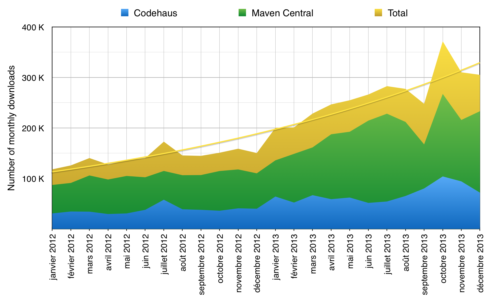

Groovy
vs
JAVA 8
Whoami
Vincent Van Steenbergen
Développeur indépendant
Twitter: @nsteenv

Groovy
Petite question:
Qui a déjà utilisé Groovy?
Non mais vraiment?
Statistiques
3 millions de downloads en 2013

et pourtant...
Paradoxalement peu connu
it is nice and at the same time weird to see Java devs now enjoying benefits that #groovylang has provided since 10 years
— Dierk König (@mittie) 19 Mars 2014Quoi que...
@mittie it is nice and at the same time weird to see Groovy devs enjoying benefits that Lisp has provided since 1959... oh, wait. :)
— voiser (@voiser) 20 Mars 2014It's just Java!
Mais en mieux!
Langage dynamique, orienté objet
Avec une touche de programmation fonctionnelle
Par exemple
On peut faire ça!
class Dog {
def bark() { println "woof!" }
def sit() { println "(sitting)" }
def jump() { println "boing!" }
}
def doAction( animal, action ) {
animal."$action"()
}
def rex = new Dog()
doAction( rex, "bark" )
doAction( rex, "jump" )
Où même ça:
def max(int i1, int i2) {
Math.max(i1, i2)
}
def numbers = [1, 2]
assert max( *numbers ) == 2
et ce n'est qu'un début!
Closures
First Class Citizens
def myConst = 5
def incByConst = { num -> num + myConst }
println incByConst(10) // => 15
Variable implicite: it
def display = { println it }
display( "hello Bordeaux!" )
display "hello Bordeaux" // ça fonctionne aussi!
Closures
Interfaces fonctionnelles
Implémente par défaut la méthode call() de l'interface Callable
def closure = { "called" }
assert closure instanceof java.util.concurrent.Callable
assert closure() == "called"
Possibilités de transtyper une closure
public interface MyFunction { def apply(); }
def closure = { "applied" } as MyFunction
assert closure instanceof MyFunction
assert closure.apply() == "applied"
Fonctions d'Ordre Supérrrieur!
def list = ['a','b','c','d']
def newList = []
def upperCase = { it.toUpperCase() }
list.collect( newList, upperCase )
assert newList == ["A", "B", "C", "D"]
vous trouvez ça compliqué?
Collections
Listes
def list = [5, 6, 7, 8]
assert list[2] == 7
assert list instanceof java.util.List
assert [1, 2, 3].collect{ it * 2 } == [2, 4, 6]
assert [1, 2, 3].findAll{ it > 1 } == [2, 3]
Ranges
def range = 5..8
assert range[-1] == 8
assert range instanceof java.util.List
assert range.max() == 8
for (i in 1..10) {
println "Hello ${i}"
}
Collections
Maps
def map = [name:"Gromit", likes:"cheese", id:1234]
assert map["name"] == "Gromit"
assert map['id'] == 1234
assert map instanceof java.util.Map
map.each{
key, value -> print key
}
et beaucoup d'autres méthodes bien utiles...
contains, findIndexOf, grep, any, every, min, max, sum, flatten, intersect, disjoint, sort, join...
Sucre syntaxique
Elvis (?:)
def displayName = user.name ? user.name : "Anonymous"
def displayName = user.name ?: "Anonymous"
Safe navigation (?.)
def user = User.find( "admin" )
def streetName = user?.address?.street
Regular expressions
def cheese = ("cheesecheese" =~ /cheese/).replaceFirst("nice")
assert cheese == "nicecheese"
Performances
Forcément moins bonnes que Java
Mais pas tant que ça!
Beaucoup d'améliorations depuis Groovy 2
Optimisations
Flag InvokeDynamic (--indy) au niveau du compilateur
Annotations @CompileStatic et @TypeChecked
Utiliser Java pour les parties critiques
Mais, mais...
Tout ça me rapelle vaguement...
Enfin!
Lambdas
Java 8
List list = Arrays.asList(1,2,3,4);
list.forEach(n -> System.out.println(n));
Groovy
def list = [1, 2, 3, 4]
list.each { println it }
Collect
Java 8
List list = Arrays.asList(1,2,3,4);
List newList = list.stream()
.map((Integer n) -> n * 5)
.collect(Collectors.toList());
Groovy
def list = [1, 2, 3, 4]
def newList = list.collect { n -> n * 5 }
assert newList == [5, 10, 15, 20]
Sort
Java 8
List list = Arrays.asList(1,2,3,4);
list = list.stream().sorted().collect(Collectors.toList());
list = list.stream().sorted((Integer a, Integer b) ->
Integer.valueOf(a-b).compareTo(b))
.collect(Collectors.toList()
);
list = list.stream().sorted((Integer a, Integer b) ->
b.compareTo(a)).collect(Collectors.toList()
);
Groovy
def list = [2, 3, 4, 1]
assert list.sort() == [1, 2, 3, 4]
assert list.sort { a, b -> a-b <=> b } == [1, 4, 3, 2]
assert list.reverse() == [2, 3, 4, 1]
Références de méthodes
Java 8 (::)
List list = Arrays.asList(1,2,3,4);
strings = strings.stream()
.map(Helpers::modifier)
.collect(Collectors.toList());
Groovy (&)
def modifier(String item) { "new_${item}" }
def list = [1, 2]
assert list.collect(this.&modifier) == ['new_1', 'new_2']
Bilan
Syntaxe et concepts trés proches!
Groovy =~ Java 8
Java 8 reste plus perfomant
Roadmap Groovy
Actuellement en version 2.2
Version 2.3 RC en avril!
Compatible Java 8
Version 3 prévue pour fin 2014
Groovy 3
Grammaire basée sur Antlr v4
Support complet de Java 8
Protocole Meta-Objet dédié
(amélioration des performances avec InvokeDynamic)
Aujourd'hui
Quel est l'intérêt d'utiliser Groovy?
GVM
GROG
GROovy static website Generator
Make it work
//TODO Make it right
//TODO Make it fast
STATUS
Make it work
Make it right
Make it fast
GRADLE
SPOCK
GRAILS
VERT.X
DSL
Domain Specific Languages
Et bien d'autres...
Ressources
Credits

Merci à vous
Questions?
Oublis?
Précisions?
Just try it!